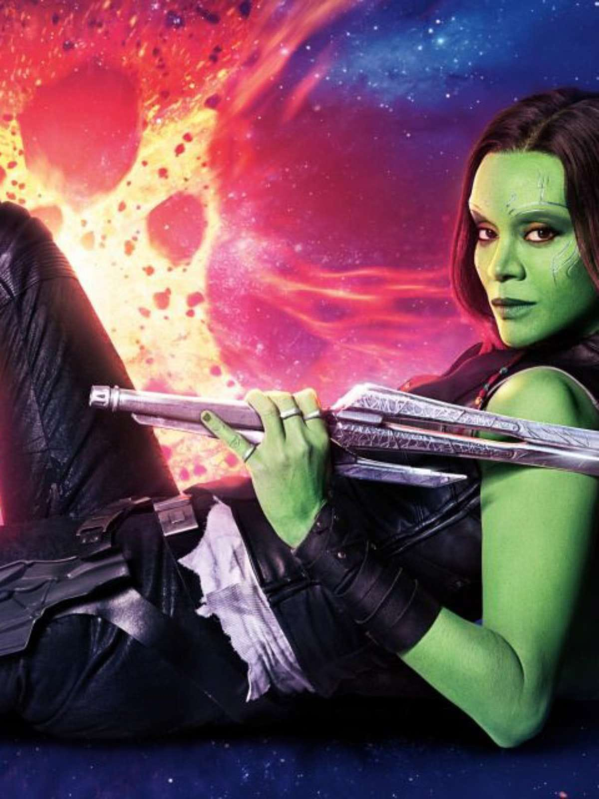

Quem é?- Biografia- Participou de...
|  | Gamora foi uma personagem fictícia que apareceu nas histórias em quadrinhos publicadas pela Marvel Comics. Criada por Jim Starlin , a personagem apareceu pela primeira vez em "Strange Tales" #180. Gamora foi a filha adotiva de Thanos, e a última de sua espécie. |
| QUAL PERSONAGEM DE GUARDIÕES DA GALÁXIA VOCÊ SERIA? | |||
| Responda: | A | B | C |
| O que você gostaria mais? | Poder se regenerar. | Ser Hábil com armas de fogo. | Ser um grande estrategista. |
| Você prefere em um dia frio: | Fazer nada. | Praticar ginástica. | Assistir um filme de baixo das cobertas. |
| O que você não gosta? | Ficar sem falar muito tempo. | Sair de casa. | Não gosta que fique encostando em você. | Resultado: | Caso você tenha escolhida mais vezes a opção "A", você seria o Groot. Caso fosse a opção "B", você seria a Gamora. Caso fosse a opção "C", você seria o Rocket Raccoon |